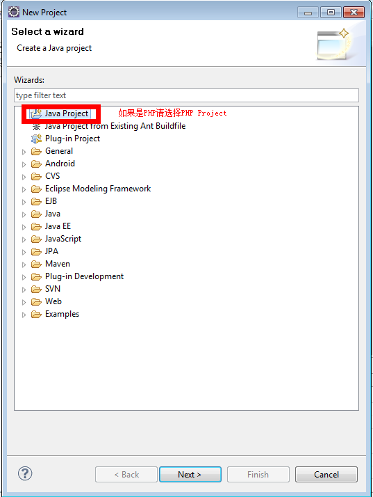
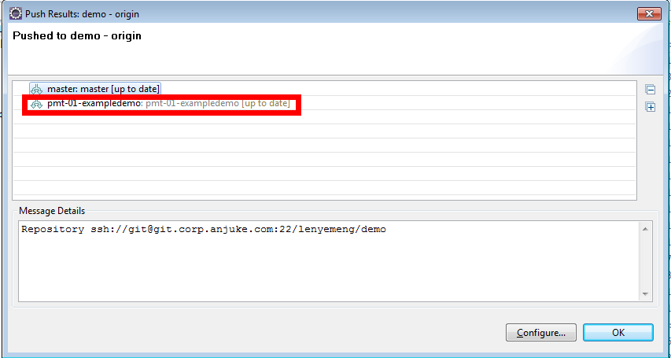

Table of Contents
Example 1. Steps
- DownLoad msysgit [1] in our public source
- Install msysgit and generate the keys pair
- Put your public key to Anjuke Git Repository [2]
- Wait for several minitus and you can clone repository from Anjuke Git Repository
- Details Install Method , You can refer github help document - http://help.github.com/win-set-up-git/


- right click on project explorer
- select Projects from Git
- input git repository uri
- select branches clone from remote repository
- select local destination
- create a new project

select the project path
![[Note]](images/icons/note.png)
The path must the same as the local repository
- clone successfully
- switch to a new branch
- input your new branch’s name and choose rebase pull stategy
- create a branch
- choose remote refs to create current week release
pull strategy choose Rebase |
- add new remote alias
- commit the modify
- push to remote repository
choose the remote repository you specified |

- choose the menu Rebase
- choose the branch we want to rebase, usually, we choose origin/master
- checkout to master branch
- choose the branch you want to merge
- checkout to release-2012_15
- create a new branch hotfix01 from release-2012_15
- fix bug and commit
- switch to release-2012_15
- merge hotfix to release
- push release to remote repository
- go back to hotfix01
- rebase hotfix01
- switch to master and merge hotfix01 to master
- push master to remote repository
resolve confilicts in git is similar as svn |
- then add to index to reslove conflicts
- then commit and push to remote repository